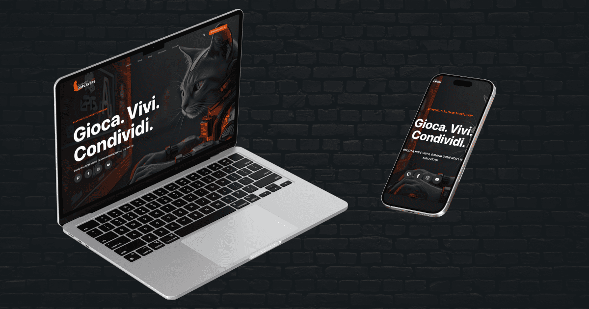

Case Study
Games for Players - E-commerce & Automazione AI

Il Contesto
Games for Players è una piattaforma per la vendita di prodotti digitali per videogiocatori. La richiesta del cliente era duplice: creare un sito che fungesse da catalogo e-commerce, ma con un flusso di vendita non convenzionale, e al contempo generare traffico organico attraverso un blog di notizie costantemente aggiornato.
La Sfida
Le sfide tecniche erano significative e complesse:
- Funnel di Vendita Custom: Progettare un'esperienza e-commerce dove l'acquisto non viene finalizzato online, ma l'utente viene reindirizzato su un canale Telegram per una consulenza e un acquisto assistito.
- Content Automation con AI: Sviluppare un sistema automatico per popolare il blog. L'automazione doveva essere in grado di reperire notizie da fonti esterne, riscriverle in ottica SEO tramite intelligenza artificiale e pubblicarle sia sul sito che su un canale Telegram dedicato.
- Gestione Eventi: Integrare una sezione per la pubblicazione e la gestione di eventi periodici organizzati dal cliente.
La Soluzione
Per rispondere a queste esigenze avanzate, ho implementato una soluzione multi-livello basata su WordPress, ma con profonde personalizzazioni:
- Flusso Telegram-centrico: Tutti i pulsanti "Acquista" sul sito sono stati trasformati in Call-to-Action che aprono direttamente una chat su Telegram, portando l'utente a un contatto diretto e personale per la vendita.
- Motore di Contenuti Automatizzato: Il fiore all'occhiello del progetto. Ho costruito un'automazione custom che:
- Monitora un feed RSS di notizie a tema videoludico.
- Passa il testo degli articoli a un'API di Intelligenza Artificiale per una riscrittura completa, ottimizzata per i motori di ricerca.
- Pubblica il nuovo articolo sul blog WordPress, conservando l'immagine originale della fonte.
- Invia automaticamente una notifica con il link al nuovo articolo sul canale Telegram "News", massimizzando la visibilità e l'engagement.
- Sezione Eventi Dinamica: Ho implementato un custom post type in WordPress per permettere al cliente di inserire e gestire facilmente gli eventi futuri e passati in totale autonomia.
Il risultato è una macchina digitale che non solo vende prodotti, ma crea e distribuisce autonomamente contenuti di valore, posizionandosi come un punto di riferimento nel suo settore.